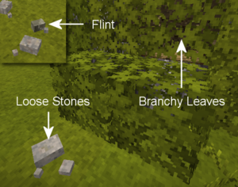
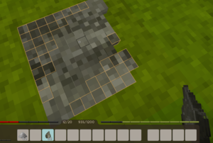
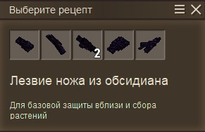

Соберите два кремня или другие разбросанные камни (базальт, гранит, обсидиан или перидотит). После нажимаем Shift+ПКМ
на твердой поверхности чтобы "откалывать". Для начала стоит отколоть лезвие ножа, для того чтобы его скрафтить
понадобится палка (её можно найти на полу, либо добыть с листвы):



Картинка 1. Пример того как выглядит кремень
Картинка 2. Процесс откалывания кремня
Картинка 3. Меню выбора создания инструмента